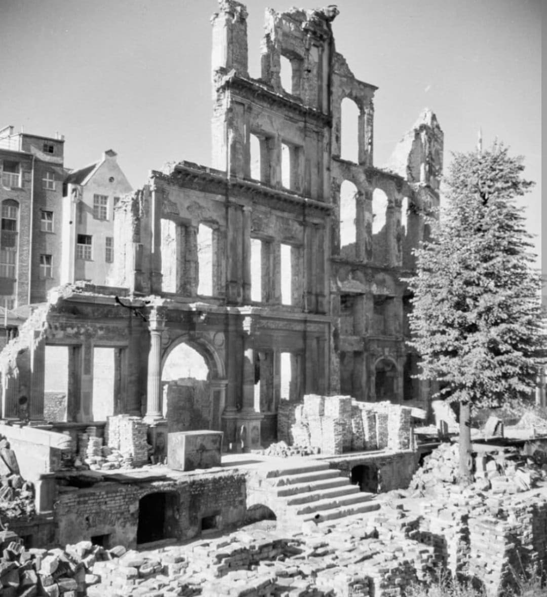
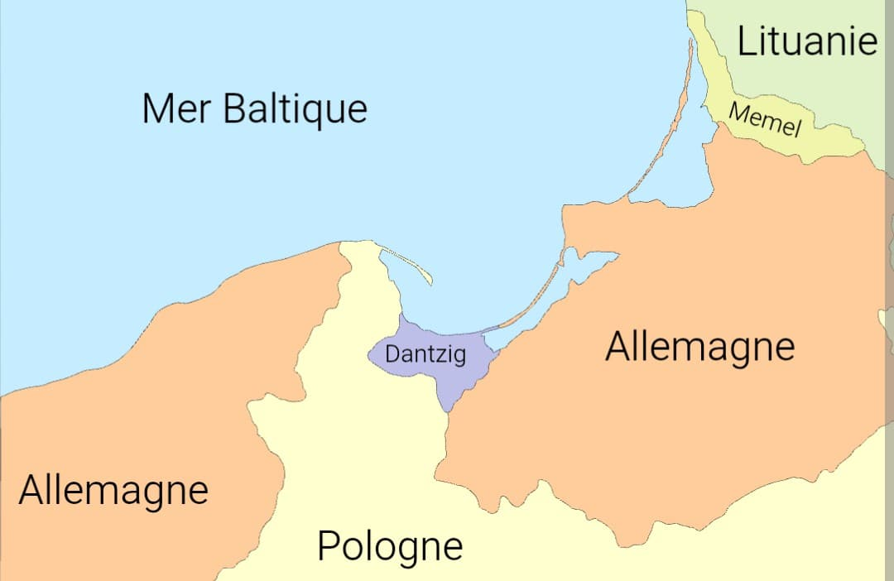
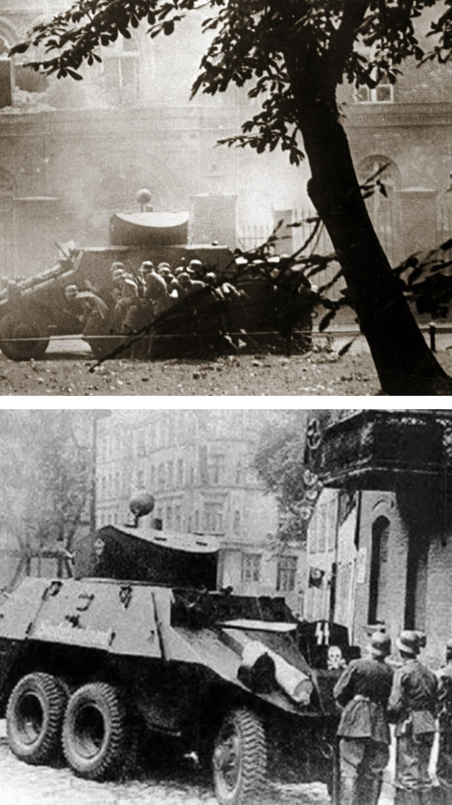
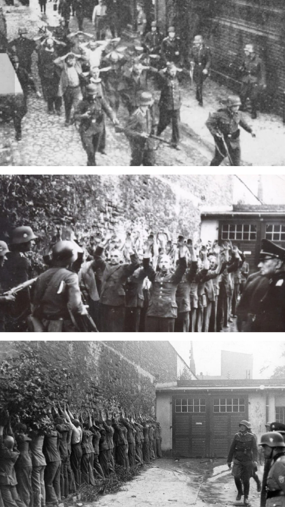

55 civils face à l'assaut des troupes SS et de la police allemande : chronique d'un hérésie militaire et d'un sacrifice oublié

Alors que les blindés allemands franchissent les frontières polonaises le 1er septembre 1939 pour déclencher la Seconde Guerre mondiale, un affrontement d'une intensité dramatique retient l'attention dans la Ville libre de Dantzig : la défense héroïque du Bureau de poste polonais n° 1.
Pendant près de quinze heures, une cinquantaine de simples employés civils, retranchés dans un bâtiment transformé en forteresse, tinrent tête aux unités d'élite de la police locale, aux milices nazies et aux blindés allemands, inscrivant leur nom dans l'histoire tragique de la résistance européenne.
Créée par le Traité de Versailles, la Ville libre de Dantzig (aujourd'hui Gdańsk) jouit d'un statut international particulier qui garantit à la Pologne des droits économiques et postaux, matérialisés notamment par l'exterritorialité de ses bureaux administratifs. Au cours des années 1930, la population majoritairement germanophone bascule massivement sous l'influence du parti national-socialiste, transformant la ville en poudrière.
Conscient du danger imminent, l'état-major polonais envoie secrètement au printemps 1939 l'ingénieur militaire Konrad Guderski. Sous une fausse couverture administrative, il organise la mise en défense des lieux, fait entrer clandestinement des armes automatiques (mitrailleuses Browning), des pistolets et des caisses de grenades, et entraîne les postiers aux rudiments du combat urbain.

À 4h45 du matin, au moment précis où le cuirassé de poche allemand Schleswig-Holstein ouvre le feu sur la presqu'île de Westerplatte, les forces de l'ordre de Dantzig et la milice de la SS-Heimwehr Danzig lancent l'assaut contre la poste.
Les assaillants pensent plier l'affaire en quelques minutes, mais se heurtent à un tir nourri. Les postiers, commandés par Konrad Guderski puis par le directeur adjoint Alfonse Flisykowski, repoussent plusieurs vagues d'assaut menées avec l'appui d'automitrailleuses lourdes ADGZ et de canons d'artillerie de 75 mm qui pilonnent la façade à bout portant.

En fin d'après-midi, face à l'impossibilité de déloger les défenseurs, les Allemands font appel au génie de la Wehrmacht. Une charge de 600 kg d'explosifs est placée sous les murs, creusant une brèche béante dans le bâtiment.
Les survivants se replient dans les caves. À la tombée de la nuit, les troupes allemandes déversent de l'essence par les soupiraux et y mettent le feu à l'aide de lance-flammes. Cinq personnes perdent la vie dans les flammes, dont la petite Erwina Barzychowska, âgée de seulement 10 ans, et le concierge Jan Michoń, abattu alors qu'il sortait brandissant un drapeau blanc.

Les trente-huit survivants extraits des décombres sont immédiatement arrêtés. Inculpés à tort de « francs-tireurs » sous prétexte qu'ils portaient des insignes civils malgré leurs brassards réglementaires de service, ils sont condamnés à mort par une cour martiale allemande.
Ils sont tous fusillés le 5 octobre 1939 dans le secteur de Zaspa. Ce n'est qu'en 1998 qu'un tribunal allemand de Lübeck reconnaîtra officiellement l'iniquité de ce jugement, annulant les condamnations et qualifiant l'exécution des postiers de crime de guerre.
Page du Musée HOP WW2 – Section Histoire & Mémoire